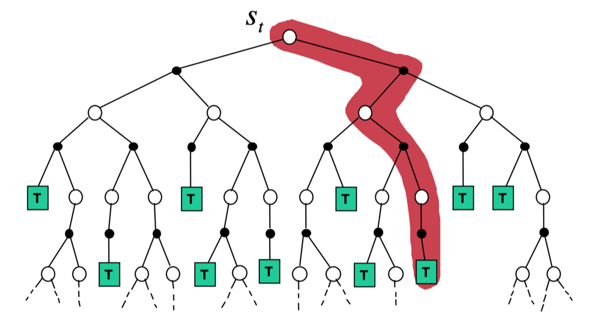
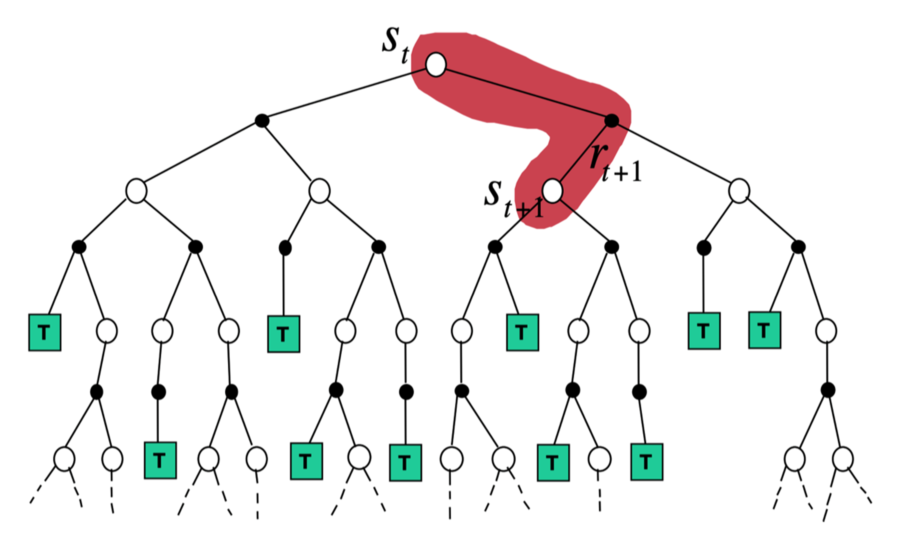

强化学习基础巩固（二）——表格型方法
策略最简单的表示是查找表，即表格型策略。使用查找表的强化学习方法被称为表格型方法，如蒙特卡洛、Q-learning和Sarsa。
有模型和免模型的区别
有模型
如果概率函数和奖励函数已知，那么整个马尔可夫决策过程就是一致的，可以通过策略迭代和价值迭代寻找最佳策略。在此情形下，我们认为这个环境是已知的，即有模型。我们其实可以直接用动态规划算法去计算。
免模型
更多情况下，我们无法获得一个准确的概率函数，甚至是完全未知的。当环境的概率函数和决策函数都未知时，就是有模型和免模型的最大区别。
区别
在免模型的环境中，我们其实就无法使用策略迭代和价值迭代去更新模型了，因为可能模型未知或者状态转移函数非常复杂。那么就可以通过智能体不断与环境交互采集大量轨迹，从轨迹中获取信息来改进策略。
Q表格
如果可以预估未来的总回报，我们就可以知道在当前的状态下选择哪个动作价值更高。我们选择某个动作是因为这样未来可以获得的价值会更高。所以强化学习的目标导向性很强，环境给出的奖励是非常重要的反馈。Q表格记录了每个状态下执行每个动作的预估回报，所以在做出决策时可以直接查表。
Q:为什么可以用回报来评价当前动作是好是坏？
A: 例如，假设一辆车在路上，当前是红灯，我们直接闯红灯的奖励就很低，因为这违反了交通规则，我们得到的奖励是当前的单步奖励。可是如果我们的车是一辆救护车，我们正在运送病人，把病人快速送达医院的奖励非常高，而且越快奖励越高。在这种情况下，我们可能要闯红灯，因为未来的远期奖励太高了。这是因为在现实世界中奖励往往是延迟的，所以强化学习需要学习远期的奖励。我们一般会从当前状态开始，把后续有可能会收到的所有奖励加起来计算当前动作的 值，让 值可以真正代表当前状态下动作的真正价值。
但有的时候我们把目光放得太长远并不好。如果任务很快就结束，那么考虑到最后一步的奖励无可厚非。但如果任务是一个持续的没有尽头的任务，即持续式任务，我们把未来的奖励全部相加作为当前的状态价值就很不合理。 股票就是一个典型的例子，如图所示，我们关注的是累积的股票奖励，可是如果10年之后股票才有一次大涨大跌，我们肯定不会把10年后的奖励也作为当前动作的考虑因素。这个时候，我们就可以引入折扣因子来计算未来总奖励，，越往后就会越小，越后面的奖励对当前价值的影响就会越小。
免模型预测
蒙特卡洛方法
蒙特卡洛方法是基于采样的方法，给定策略，让智能体和环境不断交互，可以得到很多轨迹，每条轨迹都对应一个回报：
求出所有轨迹的回报的平均值，可以知道一个策略对应的状态的价值：
蒙特卡洛仿真是指我们可以采样大量的轨迹，计算所有轨迹的真实回报，然后计算平均值。蒙特卡洛方法使用经验平均回报的方法来估计，它不需要马尔可夫决策过程的状态转移函数和奖励函数，并且不需要像动态规划那样用自举的方法。此外，蒙特卡洛方法有一定的局限性，它只能用在有终止的马尔可夫决策过程中。
设有样本，其均值为，有：
通过这种转换，我们就可以把上一时刻的平均值与现在时刻的平均值建立联系，从而把蒙特卡洛方法更新的方法写成增量式蒙特卡洛方法。
动态规划方法
动态规划也是常用的估计价值函数的方法。在动态规划方法里面，我们使用了自举的思想。自举就是我们基于之前估计的量来估计一个量。此外，动态规划方法使用贝尔曼期望备份，通过上一时刻的值来更新当前时刻的值，即：
将其不停迭代，最后可以收敛。
蒙特卡洛方法相比动态规划方法是有一些优势的。首先，蒙特卡洛方法适用于环境未知的情况，而动态规划是有模型的方法。 蒙特卡洛方法只需要更新一条轨迹的状态，而动态规划方法需要更新所有的状态。状态数量很多的时候（比如100万个、200万个），我们使用动态规划方法进行迭代，速度是非常慢的。这也是基于采样的蒙特卡洛方法相对于动态规划方法的优势。
时序差分方法
时序差分是介于蒙特卡洛和动态规划之间的方法，它是免模型的，不需要马尔可夫决策过程的转移矩阵和奖励函数。 此外，时序差分方法可以从不完整的回合中学习，并且结合了自举的思想。时序差分方法的目的是对于某个给定的策略，在线地算出它的价值函数，即一步一步地算。 最简单的算法是一步时序差分，即TD(0)。每往前走一步，就做一步自举，用得到的估计回报更新上一刻的值：
估计回报被称为时序差分目标(TD target)，即带衰减的未来奖励的总和。被称为时序差分误差。
在蒙特卡洛方法里面，是实际得到的值（可以看成目标），因为它已经把一条轨迹跑完了，可以算出每个状态实际的回报。时序差分不等轨迹结束，往前走一步，就可以更新价值函数。时序差分方法只执行一步，状态的值就更新。蒙特卡洛方法全部执行完之后，到了终止状态之后，再更新它的值。
-
时序差分方法可以在线学习（online learning），每走一步就可以更新，效率高。蒙特卡洛方法必须等游戏结束时才可以学习。
-
时序差分方法可以从不完整序列上进行学习。蒙特卡洛方法只能从完整的序列上进行学习。
-
时序差分方法可以在连续的环境下（没有终止）进行学习。蒙特卡洛方法只能在有终止的情况下学习。
-
时序差分方法利用了马尔可夫性质，在马尔可夫环境下有更高的学习效率。蒙特卡洛方法没有假设环境具有马尔可夫性质，利用采样的价值来估计某个状态的价值，在不是马尔可夫的环境下更加有效。
步时序差分
我们可以调整步数，变成步时序差分。这样我们就可以通过步数来调整算法需要的实际奖励和自举。
步时序差分可写为：
DP、MC和TD三者对比
自举是指更新时使用了估计。蒙特卡洛方法没有使用自举，因为它根据实际的回报进行更新。 动态规划方法和时序差分方法使用了自举。
采样是指更新时通过采样得到一个期望。 蒙特卡洛方法是纯采样的方法。 动态规划方法没有使用采样，它是直接用贝尔曼期望方程来更新状态价值的。 时序差分方法使用了采样。时序差分目标由两部分组成，一部分是采样，一部分是自举。
如图所示，动态规划方法直接计算期望，它把所有相关的状态都进行加和，即

蒙特卡洛方法在当前状态下，采取一条支路，在这条路径上进行更新，更新这条路径上的所有状态，即

时序差分从当前状态开始，往前走了一步，关注的是非常局部的步骤，即

如果时序差分方法需要更广度的更新，就变成了动态规划方法（因为动态规划方法是把所有状态都考虑进去来进行更新）。如果时序差分方法需要更深度的更新，就变成了蒙特卡洛方法。图右下角是穷举搜索的方法，穷举搜索的方法不仅需要很深度的信息，还需要很广度的信息。

免模型控制
Sarsa：同策略时序差分控制
时序差分方法是给定一个策略，然后我们去估计它的价值函数。接着我们要考虑怎么使用时序差分方法的框架来估计Q函数，也就是 Sarsa 算法。
Sarsa 所做出的改变很简单，它将原本时序差分方法更新的过程，变成了更新，即
该算法由于每次更新值函数时需要知道当前的状态（state）、当前的动作（action）、奖励（reward）、下一步的状态（state）、下一步的动作（action），即这几个值，因此得名Sarsa算法。如果使用步时序差分更新值，就可以扩展到步Sarsa。
Q-learning：异策略时序差分控制
Sarsa 是一种同策略（on-policy）算法，它优化的是它实际执行的策略，它直接用下一步会执行的动作去优化 Q 表格。同策略在学习的过程中，只存在一种策略，它用一种策略去做动作的选取，也用一种策略去做优化。所以 Sarsa 知道它下一步的动作有可能会跑到悬崖那边去，它就会在优化自己的策略的时候，尽可能离悬崖远一点。这样子就会保证，它下一步哪怕是有随机动作，它也还是在安全区域内。
Q-learning是一种异策略（off-policy）算法。异策略在学习的过程中，有两种不同的策略：目标策略和行为策略。目标策略是我们需要去学习的策略，一般用来表示。目标策略就像是在后方指挥战术的一个军师，它可以根据自己的经验来学习最优的策略，不需要去和环境交互。行为策略是探索环境的策略，一般用来表示。行为策略可以大胆地去探索到所有可能的轨迹，采集轨迹，采集数据，然后把采集到的数据“喂”给目标策略学习。而且“喂”给目标策略的数据中并不需要，而 Sarsa 是要有的。
Q-learning的更新方式采用贪心的策略，将时序差分目标变成了，即
我们再通过对比的方式来进一步理解 Q-learning。Q-learning是异策略的时序差分学习方法，Sarsa 是同策略的时序差分学习方法。 Sarsa 在更新 Q 表格的时候，它用到的是。我们要获取下一个 Q 值的时候，是下一个步骤一定会执行的动作，这个动作有可能是-贪心方法采样出来的动作，也有可能是最大化 Q 值对应的动作，也有可能是随机动作，但这是它实际执行的动作。 但是 Q-learning 在更新 Q 表格的时候，它用到的是 Q 值对应的动作 ，它不一定是下一个步骤会执行的实际的动作，因为我们下一个实际会执行的那个动作可能会探索。 Q-learning默认的下一个动作不是通过行为策略来选取的，Q-learning直接看Q表格，取它的最大化的值，它是默认为最佳策略选取的动作，所以 Q-learning 在学习的时候，不需要传入，即的值。
Sarsa和Q-learning的更新公式是一样的，区别只在目标计算的部分，Sarsa是，Q-learning是

同策略与异策略的区别
总结一下同策略和异策略的区别。
- Sarsa 是一个典型的同策略算法，它只用了一个策略，它不仅使用策略学习，还使用策略与环境交互产生经验。 如果策略采用-贪心算法，它需要兼顾探索，为了兼顾探索和利用，它训练的时候会显得有点“胆小”。它在解决悬崖行走问题的时候，会尽可能地远离悬崖边，确保哪怕自己不小心探索了一点儿，也还是在安全区域内。此外，因为采用的是-贪心算法，策略会不断改变（值会不断变小），所以策略不稳定。
- Q-learning是一个典型的异策略算法，它有两种策略——目标策略和行为策略，它分离了目标策略与行为策略。Q-learning可以大胆地用行为策略探索得到的经验轨迹来优化目标策略，从而更有可能探索到最佳策略。行为策略可以采用-贪心算法，但目标策略采用的是贪心算法，它直接根据行为策略采集到的数据来采用最佳策略，所以 Q-learning 不需要兼顾探索。
- 我们比较一下 Q-learning 和 Sarsa 的更新公式，就可以发现 Sarsa 并没有选取最大值的最大化操作。因此，Q-learning是一个非常激进的方法，它希望每一步都获得最大的利益；Sarsa 则相对较为保守，它会选择一条相对安全的迭代路线。
Q&A
Q：构成强化学习的马尔可夫决策过程的四元组有哪些变量？
A：状态、动作、状态转移概率和奖励，分别对应，后面有可能会加上折扣因子构成五元组。
Q：请通俗地描述强化学习的“学习”流程。
A：可以将强化学习的“学习”流程类比于人类的学习流程。人类学习就是尝试每一条路，并记录尝试每一条路后的最终结果。在人类尝试的过程中，其实就可以慢慢地了解到哪一条路（对应于强化学习中的状态概念）会更好。我们用价值函数来定量表达该状态的优劣，然后用Q函数来判断在什么状态下做什么动作能够得到最大奖励，在强化学习中我们用Q函数来表示状态-动作值。
Q：同策略和异策略的区别是什么？
A：同策略和异策略的根本区别在于生成样本的策略和参数更新时的策略是否相同。对于同策略，行为策略和要优化的策略是同一策略，更新了策略后，就用该策略的最新版本对数据进行采样；对于异策略，其使用任意行为策略来对数据进行采样，并利用其更新目标策略。例如，Q-learning在计算下一状态的预期奖励时使用了最大化操作，直接选择最优动作，而当前策略并不一定能选择到最优的动作，因此这里生成样本的策略和学习时的策略不同，所以Q-learning算法是异策略算法；相对应的Sarsa算法则是基于当前的策略直接执行一次动作选择，然后用动作和对应的状态更新当前的策略，因此生成样本的策略和学习时的策略相同，所以Sarsa算法为同策略算法。
Q：讲一下Q-learning算法，最好可以写出其的更新公式。另外，它是同策略还是异策略，原因是什么呢？
A：Q-learning是通过计算最优动作价值函数来求策略的一种时序差分的学习方法，其更新公式为
其是异策略的，由于Q更新使用了下一个时刻的最大值，因此其只关心哪个动作使得取得最大值，而实际上到底采取了哪个动作（行为策略），Q-learning并不关心。这表明优化策略并没有用到行为策略的数据，所以说它是异策略的。
Q：讲一下Sarsa算法，最好也可以写出其对应的更新公式。另外，它是同策略还是异策略，为什么？
A：Sarsa算法的更新公式为
其为同策略的，Sarsa算法必须执行两次动作得到才可以更新一次；而且是在特定策略的指导下执行的动作，因此估计出来的是在该策略下的Q值，样本生成用的和估计的是同一个，因此是同策略。
Q：基于价值的方法和基于策略的方法的区别是什么？
A：
-
生成策略上的差异，前者确定，后者随机。基于价值的方法中动作-价值对的估计值最终会收敛（通常是不同的数，可以转化为0～1的概率），因此通常会获得一个确定的策略；基于策略的方法不会收敛到一个确定的值，另外他们会趋向于生成最佳随机策略。如果最佳策略是确定的，那么最优动作对应的值函数的值将远大于次优动作对应的值函数的值，值函数的大小代表概率的大小。
-
动作空间是否连续，前者离散，后者连续。基于价值的方法，对于连续动作空间问题，虽然可以将动作空间离散化处理，但离散间距的选取不易确定。过大的离散间距会导致算法取不到最优动作，会在最优动作附近徘徊；过小的离散间距会使得动作的维度增大，会和高维度动作空间一样导致维度灾难，影响算法的速度。而基于策略的方法适用于连续的动作空间，在连续的动作空间中，可以不用计算每个动作的概率，而是通过正态分布选择动作。
-
基于价值的方法，例如Q-learning算法，是通过求解最优价值函数而间接地求解最优策略；基于策略的方法，例如REINFORCE等算法直接将策略参数化，通过策略搜索、策略梯度或者进化方法来更新参数以最大化回报。基于价值的方法不易扩展到连续动作空间，并且当同时采用非线性近似、自举等策略时会有收敛问题。策略梯度具有良好的收敛性。
-
另外，对于价值迭代和策略迭代，策略迭代有两个循环，一个是在策略估计的时候，为了求当前策略的价值函数需要迭代很多次；另一个是外面的大循环，即策略评估、策略提升。价值迭代算法则是一步到位，直接估计最优价值函数，因此没有策略提升环节。
Q：简述一下时序差分方法
A：时序差分算法是使用广义策略迭代来更新Q函数的方法，核心是使用自举，即价值函数的更新使用下一个状态的价值函数来估计当前状态的价值。也就是使用下一步的Q值来更新当前步的Q值。完整的计算公式如下：
Q：请问蒙特卡洛方法和时序差分方法是无偏估计吗？另外谁的方差更大呢？为什么？
A：蒙特卡洛方法是无偏估计，时序差分方法是有偏估计；蒙特卡洛方法的方差较大，时序差分方法的方差较小，原因在于时序差分方法中使用了自举，实现了基于平滑的效果，导致估计的价值函数的方差更小。
Q：简单说一下动态规划方法、蒙特卡洛方法和时序差分方法的异同点
A：
-
相同点：都用于进行价值函数的描述与更新，并且所有方法都基于对未来事件的展望计算一个回溯值。
-
不同点：蒙特卡洛方法和时序差分方法属于免模型方法，而动态规划属于有模型方法；时序差分方法和蒙特卡洛方法，因为都是免模型的方法，所以对于后续状态的获知也都是基于试验的方法；时序差分方法和动态规划方法的策略评估，都能基于当前状态的下一步预测情况来得到对于当前状态的价值函数的更新。
另外，时序差分方法不需要等到试验结束后才能进行当前状态的价值函数的计算与更新，而蒙特卡洛方法需要与环境交互，产生一整条马尔可夫链并直到最终状态才能进行更新。时序差分方法和动态规划方法的策略评估不同之处为免模型和有模型，动态规划方法可以凭借已知转移概率推断出后续的状态情况，而时序差分方法借助试验才能知道。
蒙特卡洛方法和时序差分方法的不同在于，蒙特卡洛方法进行了完整的采样来获取长期的回报值，因而在价值估计上会有更小的偏差，但是也正因为收集了完整的信息，所以价值的方差会更大，原因在于其基于试验的采样得到，和真实的分布有差距，不充足的交互导致较大方差。而时序差分方法则相反，因为它只考虑了前一步的回报值，其他都是基于之前的估计值，因而其价值估计相对来说具有偏差大方差小的特点。
| 特性 | 动态规划(DP) | 蒙特卡洛(MC) | 时序差分(TD) |
|---|---|---|---|
| 基本思想 | 通过迭代求解贝尔曼方程 | 通过采样完整轨迹估计期望回报 | 结合DP和MC的思想，采样单步转移并使用估计值更新 |
| 是否需要模型 | 需要完整环境模型(转移概率和奖励函数) | 不需要环境模型(无模型方法) | 不需要环境模型(无模型方法) |
| 更新依据 | 所有可能的后继状态 | 实际完整轨迹的回报 | 单步采样转移加下一状态的价值估计 |
| bootstrap | 是(使用当前价值估计来更新) | 否(使用实际回报) | 是(部分使用当前价值估计) |
| 数学表示 | |||
| 学习过程 | 全宽度备份(考虑所有可能性) | 基于样本的备份(完整轨迹) | 基于样本的备份(单步转移) |
| 收敛特性 | 确定性收敛 | 依靠多次采样收敛到期望 | 结合两者特点，通常比MC收敛更快 |
| 适用场景 | 状态空间小，已知环境模型 | 状态空间大，无环境模型，需要终止状态 | 状态空间大，无环境模型，可处理连续任务 |
| 方差与偏差 | 无采样方差，可能有模型偏差 | 无估计偏差，采样方差大 | 有估计偏差，采样方差小 |
| 更新频率 | 每轮迭代更新所有状态 | 每完成一条轨迹后更新 | 每一步交互后即可更新 |
| 样本效率 | 高(利用模型信息) | 低(需要多次完整轨迹) | 中(TD(0))到高(TD()) |
| 最大优势 | 理论上保证找到最优解 | 直接从经验中学习，不需模型假设 | 结合了DP的高效性和MC的无模型优势 |
| 最大劣势 | 需要完整模型，计算量大 | 只能用于有终止状态的任务，样本效率低 | 引入偏差，收敛性分析复杂 |